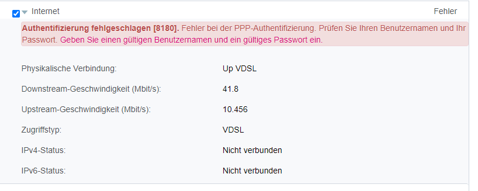
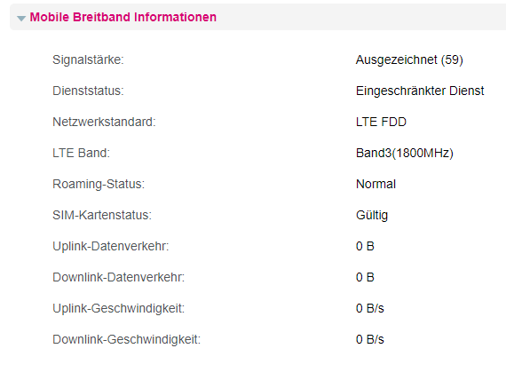

vielleicht kann mir ja hier jemand weiterhelfen :).
Ich habe seit 2 Monaten den Internet Fix 40 Vertrag laufen funktioniert ohne Probleme.
Leider ist auf meiner Leitung nur 40Mbit möglich, somit wollte ich das ganze jetzt noch mit einem Hybrid Router "verbessern".
Paket bestellt, lieferung innerhalb von 2 Tagen... Perfekt
Nun habe ich das ganze eingerichtet WLAN läuft LAN verbinden laufen, da ja schon alles mal mit der Fritzbox bei dem FIX 40 Vertrag eingerichtet habe was das absolut kein Problem.
Danach habe ich via. 192.168.1.1 den Router eingerichtet bzw. kommt die Meldung, dass kein LTE zur Verfügung steht und auch kein DSL anschluss...
Weder LTE noch DSL funktionieren... Es ist mir nicht möglich im Internet zu surfen.
Jedes mal auch nachdem ich den Router zurückgesetzt habe kommt wie oben abgebildet diese Meldung.
Weder das Internetkonto, welches vorab gespeichert ist noch mein Kontodaten bewirken etwas.
Hab ich etwas falsch gemacht, ist die Simkarte nicht freigeschalten? laut Kundenservice ist alles ok...
Kaum stelle ich auf den alten Router zurück funktioniert die DSL Verbindung wieder ohne Probleme.
Ich hoffe das mir jemand helfen kann
Liebe Grüße Stefan
Christian_E
Aus der Ferne ist das jetzt schwierig zu sagen.
Ich denke, dass da im Router noch was zu setzen ist.
Normalerweise können die Service Leute da am Router schon nachsehen. Ich würde da an der Hotline dranbleiben.
Wenn es der erste Start ist, dann ggfs. das Modem mal etwas länger in Ruhe abgesteckt und verbunden lassen.
Bei A1 weiß ich, dass sich dieses dann die Einstellungen über das Netz holt - vielleicht ist das bei dir auch notwendig?
Bearbeitet
von Christian_E
Stefan11
Danke für die schnelle antwort.
Scheint wirklich etwas zu dauern. Die TV App funktioniert auch noch nicht mit den Zugangsdaten...
Kann bis zu 24h dauern laut Kundenservice.
LG
Christian_E
Dachte ich mir.
24 Stunden kommt mir zwar lange vor aber wenns dann funktioniert - umso besser.
Wart bitte die 24 Stunden und sag uns bitte Bescheid, ob es geklappt hat.
Hoffentlich hat der Reset der Box im System nichts durcheinander gebracht.
Stefan11
kurzes Update


irgendwelche Ideen?
Christian_E
Ja das sieht recht eindeutig aus. Da gehören die Login Daten eingetragen.
Da muss Magenta liefern.
Sobald die da sind, funktioniert auch das Bonding und das Teil läuft. Ich versteh jetzt eigentlich nicht, warum sich da der Support nicht annimmt.
Da musst du bitte nochmal zur Hotline. Außer du hast die Daten und könntest sie selbst eintragen aber ich kenn leider die Modemoberfläche nicht.
Stefan11
Habe alle möglichen Daten versucht komme trotzdem nicht weiter.
Wenn ich der Hotline erkläre auf was ich hinaus möchte bekomme ich die Antwort das PW steht doch eh auf dem Router
Christian_E
Echt jetzt. So eine Antwort hast du bekommen. 😋
Ich würde gerne weiter helfen, kann aber nicht, weil ich deine Daten nicht habe aber trotzdem, bitte da bei der Hotline Druck machen. Die müssen da helfen können, denn so kommst du nicht weiter.
wisi
Hallo
@
Stefan11,
da hat Christian_E vollkommen recht – du musst über die Hotline Druck machen den so wie das hier aussieht liegt der Fehler wirklich nicht bei dir. Es fehlt die PPP-Authentifizierung und die muss Magenta liefern.
Eventuell könnte es auch sein, dass die Mac-Adresse von deinem Modem nicht oder falsch im System von Magenta eingetragen ist – damit ist das Ding nicht Teil des Firmennetzes und kann daher keine Daten empfangen. Auch hier muss Magenta tätig werden…
Christian_E
Ja gute Idee mit der Mac !
Evtl. die bereithalten und dem Support ergänzend mitteilen.
Stefan11
So hat sich jz endlich mal geklärt...
1. Der Vertrag war nicht richtig abgeschlossen hat jetzt 4 Tage gedauert das der richtig abgeschlossen wurde....
2. Der DSL Vertrag FiX 40 "blockiert" die DSL Leitung für den Hybrid....
3. LTE funktioniert jz mal aber nicht gut mal schauen was ich mit einer Antenne rausholen kann
4. Der DSL Vertrag FIX40 muss zuerst gekündigt werden damit der Hybrid wirklich aktiv geschalten werden kann
5. A1 ist für die Leitung zuständigt heißt das kann dauern....
Fazit ca. 8h telefoniert mit der Hotline und erst der letzte Techniker "Experte" konnte mir sagen wie wo was wann
danke trotzdem für die Unterstützung!
Christian_E
OK - endlich mal Klarheit.
Du wegen externer Antenne. Denk da aber bitte an eine Außenantenne. Wenn das irgendwie bei dir möglich ist.
Damit solltest du auf alle Fälle bessere Werte bekommen.
Kannst mal die aktuellen Empfangswerte beim LTE schicken? Findest du auch im Routermenü.
Stefan11
Ja sollte heute kommen und wir dann direkt aufs Dach gezogen.
Wenn ich richtig informiert bin kann ich es trotzdem nicht richtig testen, weil die Geschwindigkeit gedrosselt wird wenn ich kein DSL angschlossen hab bzw. die nicht aktiv ist.
Danach schick ich mal die Werte durch.
Christian_E
Super!
Du solltest mal die Antenne so ausrichten, dass RSRP den tiefsten Wert erreich, also je tiefer, desto weniger Dämpfung.
Andererseits sollte SINR so hoch wie möglich sein, auch wenn SINR tw. stark schwanken kann. Aber das ist kein Problem.
Welche Kabellänge hast du denn zwischen Antenne und Modem?
{kind=link}